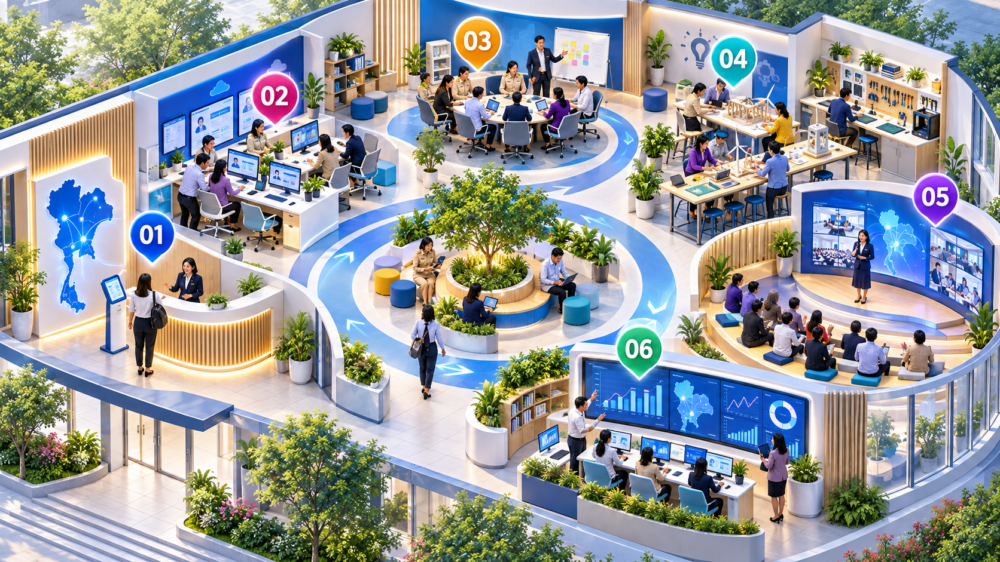

FROM EVENT TO CONTINUOUS LOOP
จาก LCF10
สู่ LCF10 LOOP
วิวัฒนาการจากระบบสนับสนุนมหกรรมวิชาการปี 2569 สู่ระบบพัฒนาต่อเนื่องที่เชื่อมคน โจทย์ ความรู้ หลักฐาน และการขยายผลตลอดทั้งปี
LOOPLearn · Open · Optimize · Progressเป้าหมายทำให้ทุกกิจกรรมหมุนกลับมาเป็นข้อมูลสำหรับพัฒนารอบต่อไป
ระบบปีนี้LCF10Event-based
ระบบระยะต่อไปLOOPContinuous system
ข้อมูลคนผลงานEVIDENCE FOR EVOLUTION
เสียงจากผู้เข้าร่วม ยืนยันว่าควรพัฒนาจาก “งาน” ไปสู่ “ระบบ”
สังเคราะห์จากข้อมูล 2 ชุดของ Learning City Fest 10 วันที่ 4 กันยายน 2569
สิ่งที่ระบบปีนี้ทำได้ดี
- เปิดพื้นที่แลกเปลี่ยนเรียนรู้และสร้างแรงจูงใจ
- Line OA ช่วยสนับสนุนการมีส่วนร่วมได้จริง
- ผู้เข้าร่วมส่วนใหญ่พร้อมกลับมาร่วมกิจกรรม
ช่องว่างที่ต้องพัฒนา
ทะเบียนและการสื่อสารก่อนงานยังไม่สมบูรณ์
ประชาสัมพันธ์และความเข้าใจขั้นตอนยังไม่ทั่วถึง
สถานที่ การประสานงาน และงบประมาณต้องต่อเนื่อง
การติดตามผลหลังจบงานยังขาดระบบ
ข้อมูลบอกอะไรคุณภาพกิจกรรมดี และคนพร้อมเดินหน้าต่อ
→ปัญหาอยู่ตรงไหนขาดกลไกสนับสนุนและติดตามอย่างต่อเนื่อง
→คำตอบเชิงระบบLCF10 LOOP เชื่อม Profile · Coach · Portfolio · Evidence · Dashboard
01ระบบที่ใช้ปีนี้
LCF10 Platform
ลงทะเบียน ยืนยันตัวตน สื่อสารผ่าน Line OA เก็บแบบประเมินและ Reflection
จุดแข็ง ทำให้งานเข้าถึงง่ายและมีข้อมูลจริง
→
02ผลการดำเนินงาน
เกิดข้อมูลและแรงส่ง
245ผู้ยืนยันตัวตน4.63ความพึงพอใจ94.8%พร้อมเข้าร่วมต่อ
ข้อค้นพบ ผู้เข้าร่วมพร้อมต่อยอด หากมีระบบหนุนเสริม
→
03ช่องว่างที่พบ
งานจบ แต่การพัฒนายังไม่ต่อเนื่อง
- ข้อมูลกระจายและสื่อสารก่อนงานไม่ทั่วถึง
- ขาด Coach / PLC และระบบติดตามหลังงาน
- งบ เวลา และหลักฐานเพื่อขยายผลไม่ต่อเนื่อง
โจทย์ใหม่ เปลี่ยนจาก Event-based สู่ System-based
→
04ระบบที่พัฒนาต่อ
LCF10 LOOP
Learning Space ทั้งกายภาพและดิจิทัล เชื่อม Mapping, Portfolio, Coaching/PLC, Show & Share และ Dashboard
ผลลัพธ์ นวัตกรรมเติบโตจากระดับพื้นที่สู่ระดับภาค
THE SYSTEM SHIFT
สิ่งที่เปลี่ยนอย่างเป็นรูปธรรม
จากลงทะเบียนเพื่อร่วมงาน→สร้างโปรไฟล์เพื่อพัฒนาต่อเนื่อง
จากแบบประเมินหลังงาน→ข้อมูลเตือนและช่วยเหลือระหว่างทาง
จากแสดงผลงานครั้งเดียว→Portfolio + เส้นทางขยายผล
จากเครือข่ายที่พบกันในงาน→Coaching / PLC ตลอดทั้งปี
จากรายงานผลย้อนหลัง→Dashboard เพื่อการตัดสินใจทันที
ONE CONTINUOUS LOOP
LCF10 LOOP ทำให้ทุกบทบาททำงานบนข้อมูลชุดเดียวกัน
LCF10 LOOP CONTROL CENTER
ข้อมูลมาจากไหน ใช้ตัดสินใจอะไรได้
เห็นเส้นทางข้อมูลตั้งแต่ผู้เข้าร่วมกรอก จนกลายเป็นสัญญาณเพื่อบริหารคน งาน และทรัพยากร
DATA LINEAGE
ข้อมูลทุกตัวเลขตรวจสอบย้อนกลับได้
แหล่งข้อมูลผู้เข้าร่วมและทีมงาน
ลงทะเบียน · ยืนยันตัวตน · เช็กอิน · แบบประเมิน · Reflection
ช่องทางเก็บLCF10 + Line OA
ฟอร์มออนไลน์ · QR หน้างาน · Portfolio · บันทึก Coaching
ระบบประมวลผลตรวจ–เชื่อม–จัดหมวด
ตัดข้อมูลซ้ำ · เชื่อมรายบุคคล/ทีม · คำนวณตัวชี้วัด
นำไปใช้Dashboard และการแจ้งเตือน
ติดตามผล · จับคู่ Coach · เลือกผลงาน · จัดสรรทรัพยากร
✓ ยืนยันตัวตนด้วยรหัสผู้เข้าร่วม✓ มีเวลาและที่มาของข้อมูล✓ ผู้รับผิดชอบตรวจรับรองก่อนสรุปผล
AUTOMATION FLOW
ระบบทำอะไรให้อัตโนมัติ
กำลังคัดกรองข้อมูล
ระบบพบ 12 ทีมพร้อมเข้าสู่กระบวนการ Coaching
DECISION SIGNALS
เรื่องที่ต้องตัดสินใจ
!
ทีมยังไม่มี Coach4 ทีม · ควรจับคู่ภายใน 3 วัน
↗
ผลงานพร้อมขยายผล7 ผลงาน · ผ่านเกณฑ์ระดับภาค
✓
หลักฐานรอรับรอง18 รายการ · จาก 6 จังหวัด
REGIONAL PULSE
ความก้าวหน้ารายพื้นที่
ดำเนินการพร้อมขยายผล
WHAT LCF10 LOOP DOES
จากข้อมูลดิบ สู่การลงมือช่วยเหลือ
PROVINCE → REGION INNOVATION PIPELINE
ระบบประกวดนวัตกรรม
โปร่งใส ส่งต่อได้ในคลิกเดียว
จังหวัดบริหารการประกวด กรรมการประเมินผ่านระบบ ผู้เข้าร่วมแสดงผลงานใน Learning Space และผลงานชนะเลิศถูกส่งต่อสู่ระดับภาคพร้อมคะแนนและหลักฐานครบชุด
การแข่งขันที่กำลังดำเนินการ5 จังหวัด · 42 ผลงาน
มุมมองผู้จัดระดับจังหวัด
เปิดรับ–ตั้งกรรมการ–รับรองผล–ส่งต่อภาค
กำหนดประเภท เกณฑ์ น้ำหนักคะแนน และช่วงเวลา พร้อมแต่งตั้งกรรมการจากบัญชีผู้เชี่ยวชาญและติดตามความครบถ้วนแบบเรียลไทม์
มุมมองผู้เข้าประกวด
ส่งผลงานครั้งเดียว จัดแสดงได้หลายรูปแบบ
สร้างหน้าผลงานใน Learning Space และตรวจความครบถ้วนก่อนส่งเข้าสู่กระบวนการประเมิน
นวัตกรรมห้องเรียนแห่งความสุขทีมโรงเรียนตัวอย่าง · อุดรธานี
ความพร้อม 86% · เหลือกำหนด Live Presentation
มุมมองคณะกรรมการ
ประเมินจากหลักฐานชุดเดียวกัน ด้วยเกณฑ์เดียวกัน
อ่านเอกสาร ดูวิดีโอ หรือเข้าชม Live พร้อมให้คะแนนและข้อเสนอแนะโดยระบบบันทึกเวลาและประวัติทุกครั้ง
ผลงานที่กำลังประเมิน
นวัตกรรมห้องเรียนแห่งความสุข
สถานะ: เอกสารและวิดีโอครบ · Live 14:00 น.คะแนนรวม88/100
มุมมองคณะกรรมการระดับภาค
รับผลงานชนะเลิศจากจังหวัดโดยไม่ต้องกรอกใหม่
ข้อมูลผู้สมัคร ผลงาน หลักฐาน คะแนน ข้อเสนอแนะ และหนังสือรับรองถูกส่งต่อเป็นชุดเดียว ภาคแต่งตั้งกรรมการชุดใหม่เพื่อคัดเลือกผลงานดีเด่นระดับภาค
ระดับจังหวัด5 จังหวัด12ผลงานผ่านการรับรอง
ผลงาน + หลักฐาน + ผลคะแนนส่งต่ออัตโนมัติ
ระดับภาค 10รอตั้งกรรมการ12ผลงานพร้อมประเมิน
END-TO-END WORKFLOW
กระบวนการเดียว ตั้งแต่จังหวัดถึงระดับภาค
REGIONAL COMMON RUBRIC
เกณฑ์กลางระดับภาค · 6 ประเภทคุณภาพนวัตกรรม
เกณฑ์ชุดนี้คือกรอบกลางที่ใช้เปรียบเทียบทุกโครงการ ส่วนตัวชี้วัดย่อยและรายละเอียดการให้คะแนนระดับ 1–5 จะจัดทำและรับรองโดยคณะกรรมการที่แต่งตั้งตามมาตรฐาน
หลักเดียวกันใช้ระดับ 1–5 ร่วมกันทุกประเภทเปิดกว้างตามบริบทโครงการ ไม่ล็อกคำถามตายตัว
01
LIVE SCOREBOARD
ผลคะแนนแบบเรียลไทม์
1
นวัตกรรมห้องเรียนแห่งความสุขอุดรธานี · ประเมินครบ 5/5
92.402
ทักษะอาชีพจากภูมิปัญญาชุมชนหนองคาย · ประเมินครบ 5/5
89.753
ระบบดูแลเด็กหลุดจากการศึกษาเลย · ประเมิน 4/5
87.20TRANSPARENCY BY DESIGN
ตรวจสอบได้ทุกขั้นตอน
- แยกสิทธิ์ตามบทบาทผู้สมัคร ผู้จัด กรรมการ และผู้รับรองเห็นข้อมูลเท่าที่จำเป็น
- Audit trailบันทึกผู้ให้คะแนน เวลา และการแก้ไขย้อนหลัง
- คำนวณอัตโนมัติใช้น้ำหนักเกณฑ์เดียวกัน ลดการรวมคะแนนผิดพลาด
- ล็อกผลก่อนประกาศรับรองโดยผู้มีอำนาจก่อนแสดงผลสาธารณะ
LCF10 LOOP PHYSICAL HUB
พื้นที่ LOOP ที่เชื่อมคน–งาน–ข้อมูล
เลือกหมายเลขบนภาพ เพื่อดูว่างานในแต่ละโซนเชื่อมเข้าสู่ระบบอย่างไร

SYSTEM-BASED DEVELOPMENT
SPIRAL: วงจรพัฒนาที่ไม่จบพร้อมงาน
ทุกกิจกรรมสร้างข้อมูลกลับเข้าสู่วงจร เพื่อพัฒนาคน งาน และนโยบายรอบถัดไป
SSurveyสำรวจ
PPlanวางแผน
IImplementลงมือ
RReflectสะท้อน
AAmplifyขยายผล
LLearnเรียนรู้ต่อ
SPIRALข้อมูลไหลต่อเนื่อง
MANAGEMENT VALUE
ผู้บริหารเห็นอะไรจากระบบ
01
เห็นความพร้อมก่อนลงทุนรู้ว่าพื้นที่ใดต้องการคน งบประมาณ หรือความรู้เฉพาะด้าน
02
ติดตามระหว่างทาง ไม่รอรายงานปลายปีสถานะ หลักฐาน และอุปสรรคอัปเดตเป็นรอบ
03
เลือกขยายผลจากหลักฐานเปรียบเทียบผลลัพธ์และความพร้อมของนวัตกรรมแต่ละพื้นที่
04
เปลี่ยนเสียงสะท้อนเป็นแผนงานReflection ถูกจัดหมวดและส่งเป็นประเด็นตัดสินใจโดยอัตโนมัติ